Stap · Statement e marca · 2026
Antes de mexer em qualquer peça, voltamos um passo: olhamos o mercado, ouvimos quem contrata a Stap e definimos o que ela passa a dizer. A marca e as peças são consequência disso.
01
Oito agências lidas nas próprias fontes: o que dizem, o que mostram e o que ninguém prova.
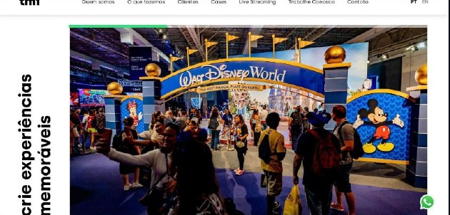
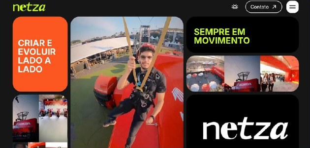
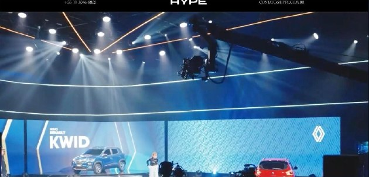
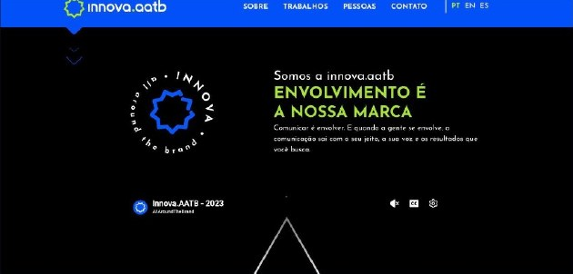
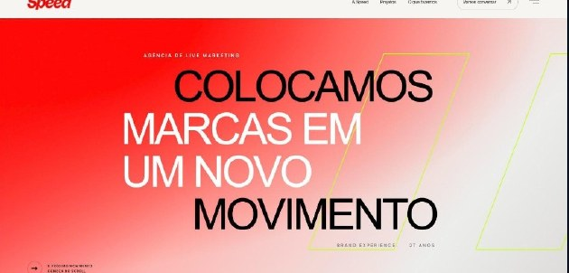
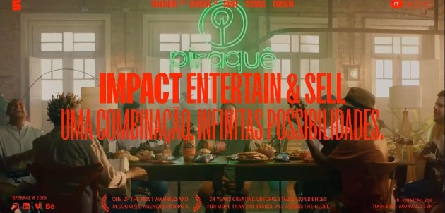
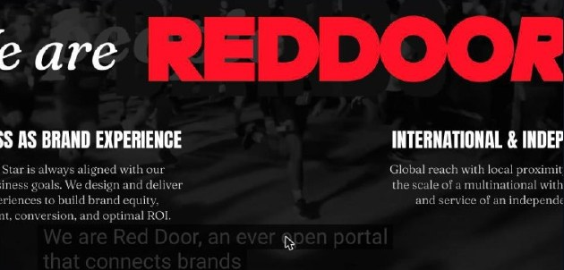
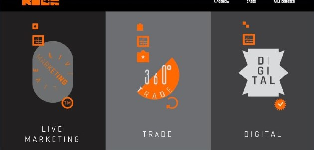
Primeira tela de cada site · 18/out/2026
O que todo mundo diz não diferencia ninguém. E a Stap também falava assim.
0 de 8
mostram o render aprovado ao lado do projeto entregue.
2 de 8
trazem números por case, e são de escala e público.
0 de 8
medem prazo cumprido ou fidelidade ao que o cliente aprovou.
Todas as páginas de case disponíveis · 19/out/2026
Grupo Speed · GWM na Agrishow
1
foto
0
números
0
render ou processo
“A imagem do projeto apresenta um veículo em uma estrutura de pista elevada.” O texto do case descreve a própria foto.
speedsports.com.br/projetos/gwm-agrishow · capturado em 26/out/2026
Netza · Fórmula E / Innova AATB · Cummins
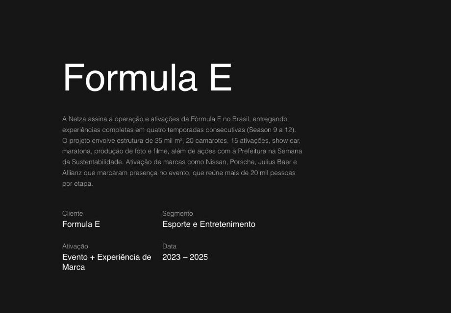
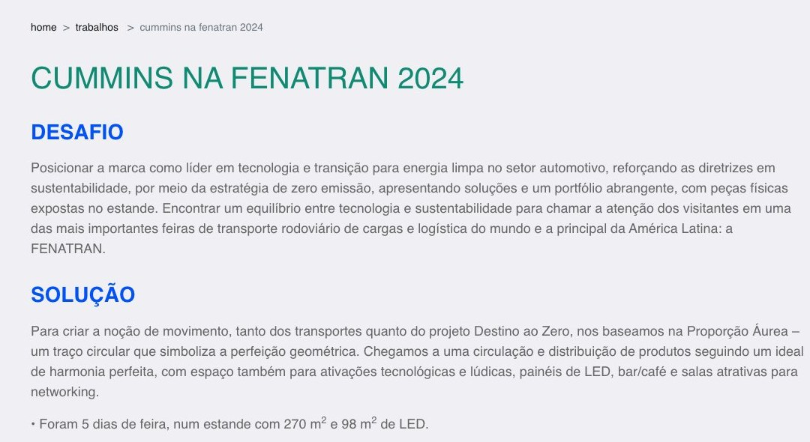
Área e público, sim. O aprovado ao lado do entregue, ninguém.
netza.com.br/portfolio/formula-e · aatb.com.br/trabalhos · capturados em 26/out/2026
Leitura do discurso: o que cada uma promete e o que prova no site, nos cases e nas redes. Não mede tamanho nem qualidade de entrega.
→ Horizontal: da promessa de emoção à prova de entrega (projeto, dado, processo).
↑ Vertical: de quem atende qualquer setor a quem assume setores (Agro, Auto).
Hoje a Stap já é especialista, mas fala de emoção como o grupo.
O movimento é um só: da emoção para a prova.
Stap
Para onde vamos
Posições aproximadas, a partir de sites e redes · out/2026
O que ouvimos
“Os clientes escolhem a Stap pela criatividade e pela segurança de entrega.”
Criatividade abre a porta. Segurança fecha o contrato. E quem decide, muitas vezes, é o departamento de compras.
02
O insight que saiu do estudo, a frase e a plataforma que ela organiza.
A crença
“Você não é o que você faz. Você é o que você faz as pessoas sentirem.”
A alma do feelings. Sozinha, vira poesia: qualquer agência poderia dizer.
A prova
Criação, arquitetura e produção no mesmo time. O que o cliente aprova é o que o público encontra.
É o que o mercado não mostra e o que quem contrata quer ver.
Criação, arquitetura e produção integradas, do projeto à montagem.
Sentimentos
O feelings do nome, em português e no plural: o que a experiência provoca em cada pessoa.
se constroem.
A prova no verbo. Sentimento não acontece por acaso: é projetado, arquitetado e montado.
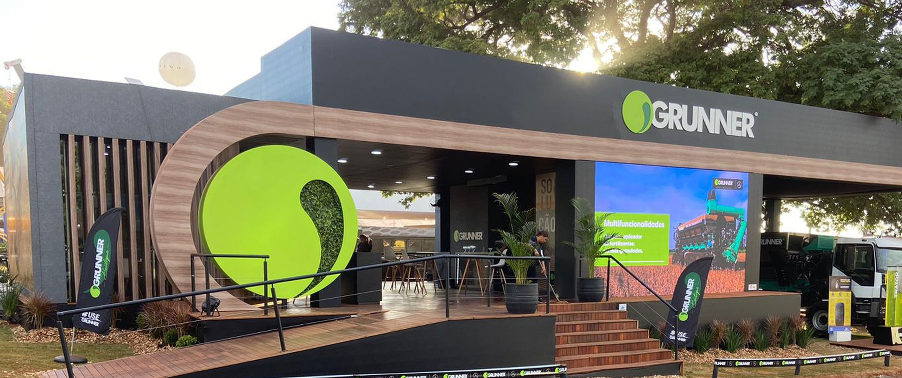
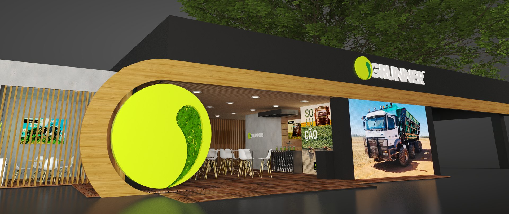
RenderRealGrunner · Agrishow · arraste o traço
Marketing
“A ideia que você aprova chega inteira ao público.”
Prova: render × real e criatividade reconhecida.
Compras
“Um time só, do projeto à montagem. Menos risco.”
Prova: % no prazo, % sem aditivo [a levantar].
Diretoria
“Sentimentos se constroem.”
Prova: 34 anos e a carteira de Agro e Auto.
Feiras · ativações outdoor · convenções · plenárias · campanhas de incentivo · design
03
Um statement novo pede uma voz à altura.
Presença
Reconhecível de longe: numa feira, num feed, na capa de uma proposta.
Voz
A assinatura fala com a mesma voz do statement: emoção com firmeza.
Atitude
Mais bold, mais editorial, mais argumento. A marca deixa de ser só um selo.
Até 2026
2026
Fica: o nome, o feelings e o navy. Quem conhece a Stap reconhece.
Muda: o Stap ganha desenho próprio, com presença; o feelings vai para caixa-alta espaçada.
04
Tipografia, cor, degradês e um elemento próprio.
Emoção
Aaa
Instrument Serif · regular e itálica
ABCDEFGHIJKLMNOPQRSTUVWXYZ
abcdefghijklmnopqrstuvwxyz 0123456789
Statement, títulos e frases. A palavra-sentimento em itálico azul.
Impacto
Aa
Tusker Grotesk 3500 Medium
ABCDEFGHIJKLMNOPQRSTUVWXYZ
0123456789 +4.000
Caixa-alta, poucas palavras: números de prova e nomes de cliente.
Leitura
Aa
PPR Text · regular
ABCDEFGHIJKLMNOPQRSTUVWXYZ
abcdefghijklmnopqrstuvwxyz
0123456789
Texto corrido, legendas e etiquetas espaçadas.
A cor forte de cada peça é a do cliente, nas fotos. A Stap fica clara em volta: base off-white, azuis como luz, navy em momentos pontuais. Terrosos de apoio vêm dos materiais dos próprios projetos.
Essenciais · só azuis | Atmosferas · com terrosos
Entram em aberturas, títulos de impacto, motion e posts. Nunca no logo, atrás de texto corrido ou sobre a cor do cliente.
+4.000
projetos.
Aplicação · grad entardecer + Tusker em gelo
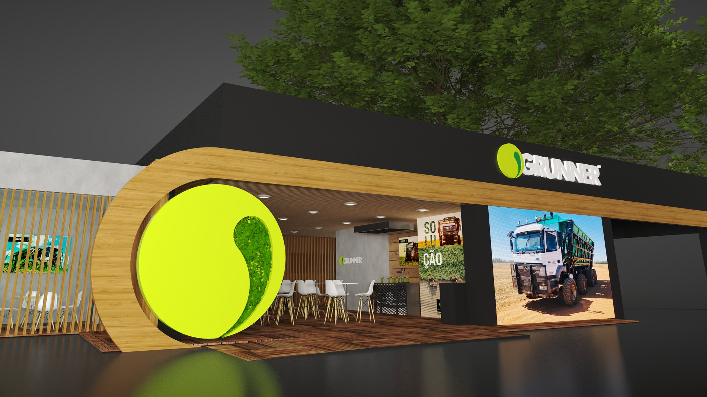
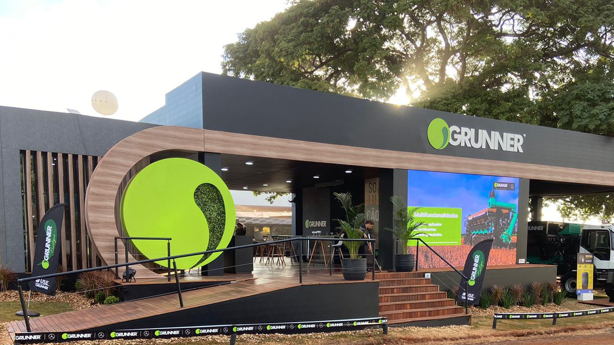
Render de um lado, real do outro. No site vira controle deslizante; nos posts, a série Render × Real.
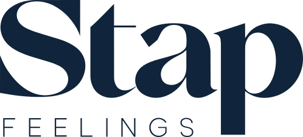
Vertical como principal, horizontal para cabeçalhos, reduzidas para tamanhos pequenos. O degradê nunca entra no logo.
Statement
Sentimentos se constroem.
Proposta de valor
Criação, arquitetura e produção integradas, do projeto à montagem.
Prova
Do render ao real.
Assinatura
Identidade
Serifa que lidera, base clara, azuis como luz, degradês e só foto real.
Elemento próprio
O traço que divide o render do real, em toda peça.
O statement vai para a rua
Stap · desde 1992